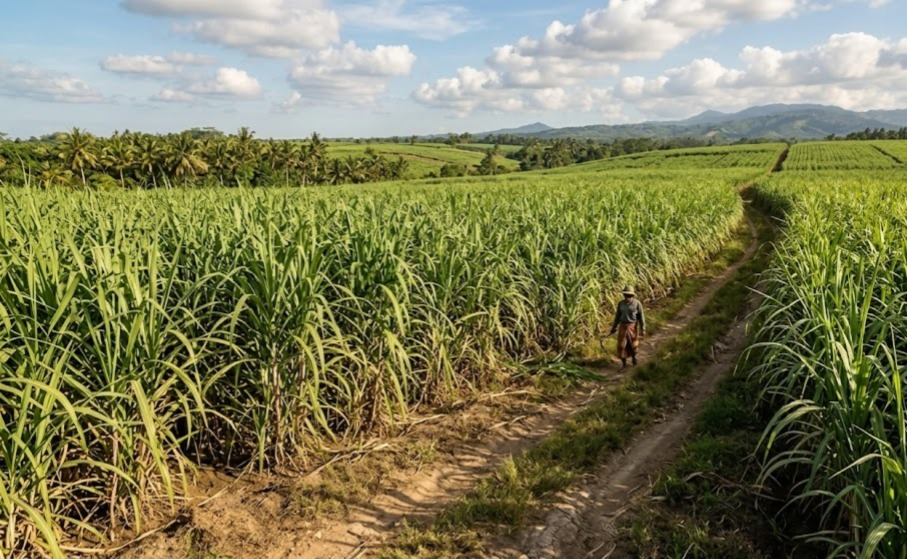
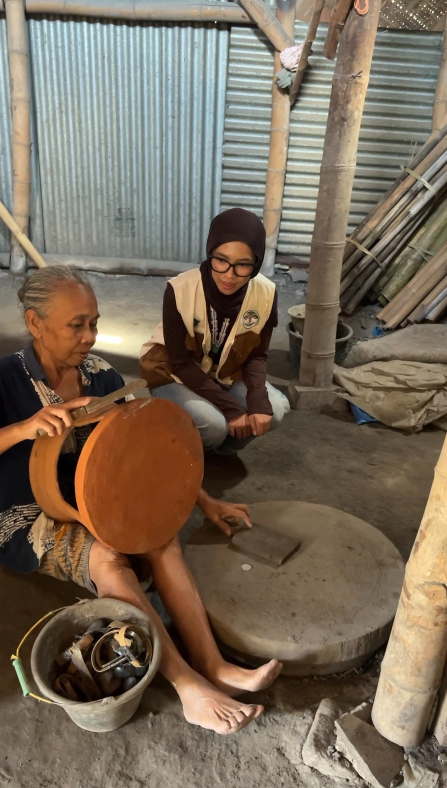
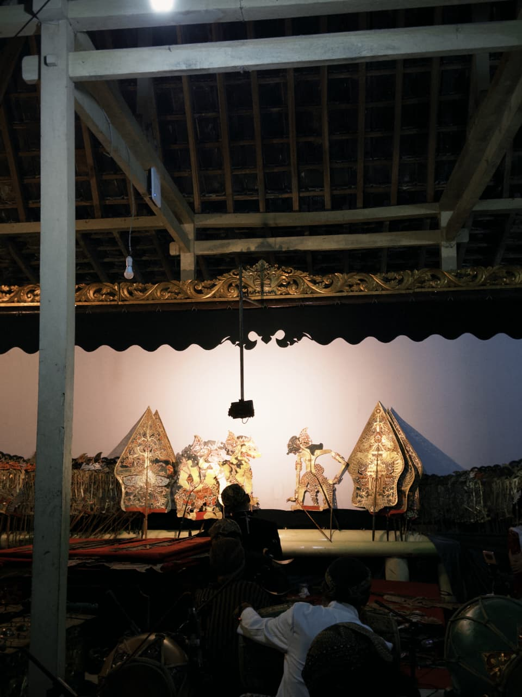

Galeri Desa


Portal informasi resmi desa untuk pelayanan publik, transparansi pemerintahan, dan promosi potensi desa.
Jelajahi DesaSelamat datang di Website Resmi Desa Kaligayam. Website ini hadir sebagai sarana informasi, komunikasi, dan transparansi pemerintahan desa.
Melalui website ini masyarakat dapat memperoleh berbagai informasi mengenai kegiatan, pelayanan, pembangunan, dan potensi desa secara cepat dan mudah.
Rp 2.202.2768.396
Rp 2.197.212.588
Rp 5.555.808
Menjelajahi kekayaan alam, budaya, dan produk unggulan masyarakat desa kami.

Desa Kaligayam memiliki lahan pertanian subur yang menghasilkan padi, palawija, dan sayuran segar berkualitas tinggi sebagai komoditas utama.

Kreativitas warga lokal menghasilkan berbagai produk kerajinan tangan unik dan kuliner khas tradisional yang siap bersaing di pasar luas.

Pelestarian adat istiadat dan keelokan sudut desa menawarkan potensi wisata edukasi budaya yang asri dan berkarakter.
Jalan Bayat-Gantiwarno Km. 02, Dusun Bantengan, Desa Kaligayam, Kecamatan Wedi, Kabupaten Klaten, Jawa Tengah (Kode Pos 57461)
0856-2927-006
desakaligayamwediklaten@gmail.com